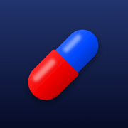

Meds Daily
Privacy Policy
Effective October 25, 2026
Meds Daily is a medication reminder. We built it so that your health data never leaves your device.
Data we collect
None. Meds Daily does not collect, transmit, sell or share any personal data. There is no account, no analytics, no advertising and no tracking.
Data stored on your device
The medications, doses, schedules and intake history you enter are stored only on your device (iPhone, iPad, or Android phone or tablet), in the app's private storage shared with its widgets. Deleting the app deletes this data.
If you have device backups turned on (iCloud on iPhone and iPad, Google backup on Android), this data is included in your own backup, protected by Apple or Google. We have no access to it.
Notifications, Live Activities and Live Updates
Reminders, widgets and the lock screen countdown are generated locally on your device. No server is involved.
Children
The app does not collect any data, including from children.
Changes
If this policy changes, the new version will be published on this page with a new effective date.
Contact
Questions about privacy: open an issue on GitHub.
Политика конфиденциальности
Действует с 25 октября 2026 года
Meds Daily («Таблетки») - приложение-напоминание о приёме лекарств. Оно устроено так, чтобы данные о вашем здоровье не покидали устройство.
Какие данные мы собираем
Никаких. Приложение не собирает, не передаёт, не продаёт и никому не раскрывает персональные данные. В нём нет аккаунта, аналитики, рекламы и отслеживания.
Данные на устройстве
Лекарства, дозировки, расписание и история приёмов, которые вы вводите, хранятся только на вашем устройстве (iPhone, iPad, телефоне или планшете на Android), в закрытом хранилище приложения и его виджетов. При удалении приложения эти данные удаляются.
Если на устройстве включено резервное копирование (iCloud на iPhone и iPad, резервная копия Google на Android), эти данные попадают в вашу собственную резервную копию под защитой Apple или Google. У нас к ней доступа нет.
Уведомления, Live Activity и Live Update
Напоминания, виджеты и таймер на экране блокировки формируются на самом устройстве, без сервера.
Дети
Приложение не собирает никаких данных, в том числе данных детей.
Изменения
Если политика изменится, новая версия будет опубликована на этой странице с новой датой.
Связь
Вопросы о конфиденциальности: создайте обращение на GitHub.